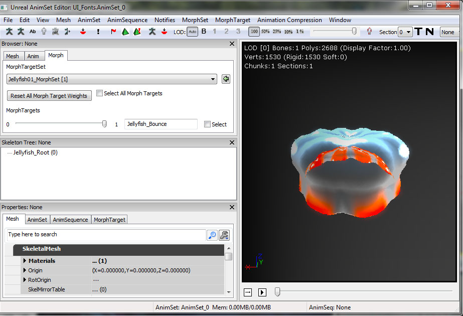

UDN
Search public documentation:
WhizzleCreationDocumentKR
English Translation
日本語訳
中国翻译
Interested in the Unreal Engine?
Visit the Unreal Technology site.
Looking for jobs and company info?
Check out the Epic games site.
Questions about support via UDN?
Contact the UDN Staff
日本語訳
中国翻译
Interested in the Unreal Engine?
Visit the Unreal Technology site.
Looking for jobs and company info?
Check out the Epic games site.
Questions about support via UDN?
Contact the UDN Staff
UDK 홈 > 위즐 제작 문서
위즐 제작 문서
문서 변경내역: 홍성진 위키 & 번역, pdf 1.2 기반

개요
프로토타입
레벨
레벨은 레이어, "2D" 면을 향하는 카메라 세트로 만들어집니다. 이는 보통 세 가지 주요 레이어로 구성됩니다. 전경 레이어는 흥미로운 게임 플레이가 벌어지는 곳입니다. 배경은 파랑 배경막에다 그 사이에 놓인 전경 지오메트리에서 뻗어간 그림자 실루엣으로 구성됩니다. 레벨 지오메트리는 거의 전적으로 돌출형 모양으로 구성됩니다. 이를 통해 레벨 생성 과정을 크게 단순화시킬 수 있습니다.캐릭터
셋업
볼 콜리전은 'UseSimpleRigidBodyCollision' (심플 리짓 바디 콜리전 사용) 옵션을 체크한 상태에서 [콜리전 > 자동 컨벡스 콜리전] 으로 만든 단순한 구체형 메시입니다. 메인 캐릭터는 플레이어에게 약간의 조작만을 허용하여 레벨을 돌아다니는 방향만 잡도록 하고, 대부분은 피직스로 제어합니다. 그때문에 메인 캐릭터는 AquaBall (아쿠아볼)이라는 KActor 의 서브클래스로 시작했습니다. 이 캐릭터는 구체 모양으로 시작할 테니, 기본적인 리짓 바디 콜리전을 가진 단순한 구체로 시작한 것입니다. 아래에서 볼 수 있는 플랙을 통해 레벨 디자이너가 레벨에 실제로 놓을 수 있게 됩니다.
메인 캐릭터는 플레이어에게 약간의 조작만을 허용하여 레벨을 돌아다니는 방향만 잡도록 하고, 대부분은 피직스로 제어합니다. 그때문에 메인 캐릭터는 AquaBall (아쿠아볼)이라는 KActor 의 서브클래스로 시작했습니다. 이 캐릭터는 구체 모양으로 시작할 테니, 기본적인 리짓 바디 콜리전을 가진 단순한 구체로 시작한 것입니다. 아래에서 볼 수 있는 플랙을 통해 레벨 디자이너가 레벨에 실제로 놓을 수 있게 됩니다.
/*
* Copyright ⓒ 2009 Psyonix Studios. All Rights Reserved.
*
* AquaBall 은 레벨 내 캐릭터의 물리적 표현을 위해 만들어졌습니다.
* 구체 모양이므로 물결 모양도 균일할 것입니다.
* 플레이어에게 일어나는 모든 이동, 파워, 이벤트를 처리합니다.
*/
class AquaBall extends KActorSpawnable
placeable;
DefaultProperties
{
Begin Object Name=StaticMeshComponent0
StaticMesh=StaticMesh'Char_Whizzle.SM.Whizzle_Collision01'
bNotifyRigidBodyCollision=true
HiddenGame=FALSE
ScriptRigidBodyCollisionThreshold=0.001
LightingChannels=(Dynamic=TRUE)
DepthPriorityGroup=SDPG_Foreground
End Object
}
 카메라 첫 반복처리(iteration)는 순전히 키즈멧으로만 구성했습니다. 키즈멧에서 [New Event > Level Loaded], [New Action > Camera > Set Camera Target], [New Action > Actor > Attach to Actor] 를 사용하여 CameraActor (카메라 액터)를 월드에 X 양수 방향을 향하도록 놓는 식으로 구성했으며, 구체적인 것은 아래 이미지를 참고하십시오. 카메라가 볼에 강하게 붙었으니, 볼이 어느 방향으로 움직이든 카메라 역시 따라 움직입니다.
카메라 첫 반복처리(iteration)는 순전히 키즈멧으로만 구성했습니다. 키즈멧에서 [New Event > Level Loaded], [New Action > Camera > Set Camera Target], [New Action > Actor > Attach to Actor] 를 사용하여 CameraActor (카메라 액터)를 월드에 X 양수 방향을 향하도록 놓는 식으로 구성했으며, 구체적인 것은 아래 이미지를 참고하십시오. 카메라가 볼에 강하게 붙었으니, 볼이 어느 방향으로 움직이든 카메라 역시 따라 움직입니다.

이동
컨스트레인트 (제약) Aqua (아쿠아)는 2D 시점으로 디자인되었기에, 두 축으로만 움직이도록 제약시키는 것이 이치에 맞습니다. Z 는 상하축으로, Y 는 좌우축으로 사용됩니다. AquaBall (아쿠아 볼)을 제약시켜 X 축으로 움직이지 못하게 하기 위해, PostBeginPlay (플레이 시작 이후)에 RB_ConstraintActorSpawnable (리바_스폰가능 컨스트레인트 액터)를 스폰하고 프로퍼티를 적당히 설정해 줍니다. InitConstraint(...) (컨스트레인트 초기화 함수)에 'none' 을 전달해 주면 볼을 월드에 제약시킵니다. Y Z 축으로만 움직일 수 있으니, (키즈멧에서 강하게 붙은) 카메라 역시 Y Z 축으로만 움직일 수 있습니다.
// 볼 초기화:
// - 볼이 Y Z 축으로만 움직이도록 제약합니다.
simulated event PostBeginPlay()
{
local RB_ConstraintActor TwoDConstraint;
super.PostBeginPlay();
// 월드에 컨스트레인트를 스폰시켜 만듭니다. self 를 사용하여 컨스트레인트의 Owner 를 볼에 설정합니다.
// 볼과 같은 위치에 Spawn 시키려는데, 그 위치는 Location 변수에 저장되어 있고 로테이션은 없습니다.
TwoDConstraint = Spawn(class'RB_ConstraintActorSpawnable', self, '', Location, rot(0,0,0));
// bLimited 디폴트는 1 로 설정되어 있으니, Y Z 축 이동을 위해서는 꺼 줍니다.
TwoDConstraint.ConstraintSetup.LinearYSetup.bLimited = 0;
TwoDConstraint.ConstraintSetup.LinearZSetup.bLimited = 0;
// 볼을 X 축으로 움직이게 만들 수 있는 스윙을 제약시킵니다.
TwoDConstraint.ConstraintSetup.bSwingLimited = true;
// 컨스트레인트를 초기화시키고 볼을 월드에 제약시킵니다.
TwoDConstraint.InitConstraint( self, None );
}
class AquaPlayerController extends AquaPlayerControllerBase;
// 조절중인 AquaBall 입니다.
var AquaBall Ball
// 게임 플레이 도중의 디폴트 스테이트 입니다.
state ControllingBall
{
// 플레이어가 이 스테이트를 벗어나게 만들 이벤트를 무시합니다.
ignores SeePlayer, HearNoise, Bump;
// 속도를 실제로 설정하기 위해 Player Move 이후 Process Move 를 호출하나, 이 작업 모두 AquaBall 에서 합니다.
function ProcessMove(float DeltaTime, vector NewAccel, eDoubleClickDir DoubleClickMove, rotator DeltaRot);
// 플레이어의 이동 방향을 업데이트합니다.
function PlayerMove( float DeltaTime )
{
if (Ball != None)
{
// RawJoyRight, RawJoyUp, 플레이어가 조이스틱을 상하좌우로 얼마만큼 밀었는지 실제 값입니다.
Ball.AxisInput(PlayerInput.RawJoyRight, PlayerInput.RawJoyUp);
}
}
}
// PlayerController 에게 전송되는 초기 스테이트로, 시작시 이를 우리 제어 스테이트로 전송합니다.
auto state PlayerWaiting
{
exec function PressStart()
{
}
Begin:
// 볼 제어 스테이트로 들어가기 전 .5 초 대기, 플레이어한테 보이기도 전에 돌아다니지 못하도록 하기 위함입니다.
Sleep(0.5f);
Initialize();
GotoState('ControllingBall');
}
class AquaBall extends KActorSpawnable
placeable;
// 입력 값은 스피드 아웃 값으로, 푸시 양입니다.
var() InterpCurveFloat InputPushAmountCurve;
// 조이스틱이 플레이어를 Z 축으로 얼마만큼 밀어줄지에 대한 곱수입니다.
var() float InputPushAmountY;
// 조이스틱이 플레이어를 Y 축으로 얼마만큼 밀어줄지에 대한 곱수입니다.
var() float InputPushAmountZ;
// 입력을 이 수3준까지 제한시켜, -1 에서 이 임계값까지 오르도록 합니다.
// 0 으로 설정하면 윗방향 힘이 없는 것입니다.
var() float InputThresholdZ;
// Y 는 좌우, Z 는 상하, 항상 -1 에서 1 사이입니다.
var vector MovementDirection;
// 캐릭터가 움직여갈 방향을 설정하기 위해 PlayerController 에서 호출됩니다.
simulated event AxisInput(float AxisRight, float AxisUp)
{
MovementDirection.Y = AxisRight;
MovementDirection.Z = AxisUp;
}
// 매 틱마다 캐릭터의 미는 힘을 업데이트합니다.
simulated event Tick(float DT)
{
super.Tick(DT);
// 입력 미는 힘을 적용합니다.
AddInputForce( DT );
}
// 캐릭터를 밀어줄 방향을 결정하는 데 플레이어의 입력을 사용합니다.
simulated function AddInputForce(float DeltaTime)
{
local vector PushVector;
local float InputForceMultiplier;
// 플레이어가 조이스틱을 살짝만 움직인 경우라면, 그 입력으로 플레이어를 움직이지 않습니다.
// 기본적으로 데드존을 하드 코딩하는 것입니다.
if( VSize(MovementDirection) < 0.2f )
return;
// 입력 힘 곱수를 커브에 따라 변화시킵니다.
InputForceMultiplier = EvalInterpCurveFloat( InputPushAmountCurve, VSize(Velocity) );
// 볼을 움직일 실제 방향을 저장합니다.
PushVector = MovementDirection;
// InputThresholdZ 가 어찌 설정되었는가에 따라 플레이어를 Z 방향으로 약간만 움직일 수 있도록 합니다.
PushVector.Z = FMin(InputThresholdZ, PushVector.Z);
// 미는 힘의 방향을 곱수로 증가시킵니다. (Constant + Curve)
PushVector.Y *= InputPushAmountY * InputForceMultiplier;
PushVector.Z *= InputPushAmountZ * InputForceMultiplier;
// 몇 프레임에 걸쳐 볼에 실제로 힘을 가합니다.
StaticMeshComponent.AddImpulse(PushVector * DeltaTime);
}
DefaultProperties
{
Begin Object Name=StaticMeshComponent0
StaticMesh=StaticMesh'Char_Whizzle.SM.Whizzle_Collision01'
bNotifyRigidBodyCollision=true
HiddenGame=FALSE
ScriptRigidBodyCollisionThreshold=0.001
LightingChannels=(Dynamic=TRUE)
DepthPriorityGroup=SDPG_Foreground
End Object
InputPushAmountY=3000
InputPushAmountZ=2000
InputThresholdZ=0.1f
InputPushAmountCurve=(Points=((InVal=0.0,OutVal=1.0),(InVal=600.0,OutVal=2.00),(InVal=2000,OutVal=6.0f),(InVal=4000,OutVal=16.0f)))
}
// 볼에 중력을 얼마만큼 적용할 것인지.
// 모든 것에 중력을 적용하진 않을테니 커스텀 작업으로 해 줍니다.
var() float Gravity;
// 매 틱과 로테이션마다 캐릭터의 미는 힘을 업데이트합니다.
simulated event Tick(float DT)
{
super.Tick(DT);
// 중력을 적용합니다.
AddGravityForce( DT );
// 입력 미는 힘을 적용합니다.
AddInputForce( DT );
}
// 중력을 추가합니다.
simulated function AddGravityForce(float DeltaTime)
{
// 중력은 항상 아래로만 밀어주니, Z 축 -1 값을 사용합니다.
StaticMeshComponent.AddImpulse(vect(0,0,-1) * Gravity * DeltaTime);
}
DefaultProperties
{
Begin Object Name=StaticMeshComponent0
StaticMesh=StaticMesh'Char_Whizzle.SM.Whizzle_Collision01'
HiddenGame=FALSE
LightingChannels=(Dynamic=TRUE)
DepthPriorityGroup=SDPG_Foreground
End Object
Gravity=3500
InputPushAmountY=3000
InputPushAmountZ=2000
InputThresholdZ=0.1f
InputPushAmountCurve=(Points=((InVal=0.0,OutVal=1.0),(InVal=600.0,OutVal=2.00),(InVal=2000,OutVal=6.0f),(InVal=4000,OutVal=16.0f)))
}
게임 돌아가게 만들기
맵에 스타트 업 설정 커스텀 맵에 스타트 업을 설정하려면, DefaultEngine.ini 에 몇 가지 변수를 바꿔주기만 하면 됩니다. 주로 사용되는 것은 LocalMap 이니, 이것을 자신의 맵 파일 이름으로 바꿉니다:[Configuration] BasedOn=..\Engine\Config\BaseEngine.ini [URL] MapExt=ut3 Map=Default.ut3 LocalMap=Level01.ut3 TransitionMap=Default.ut3 EXEName=UTGame.exe DebugEXEName=DEBUG-UTGame.exe GameName=Unreal Tournament 3 GameNameShort=UT3
/*
* Copyright ⓒ 2009 Psyonix Studios. All Rights Reserved.
*/
class AquaGame extends GameInfo;
DefaultProperties
{
// 꼭 클래스명 이전에 패키지명을 지정하세요.
PlayerControllerClass=class'AquaGame.AquaPlayerController'
}
[Configuration] BasedOn=..\Engine\Config\BaseGame.ini [Engine.GameInfo] DefaultGame=AquaGame.AquaMenuGame DefaultServerGame=AquaGame.AquaMenuGame PlayerControllerClassName=AquaGame.AquaPlayerController

이펙트
첫 이펙트는 일단 이 게임이 수중이라는 데 주목해 봅시다. 지금까지 우리 월드에 방울이 없었으니, 플레이어를 방울 방울 따라다니게 만들어 줍시다. 먼저 버블 머티리얼이 필요합니다. 콘텐츠 브라우저에 우클릭하고 Material 을 만듭니다. 이 방법은 방울을 만들기엔 약간 복잡한 방식입니다. 물론 멋진 버블 텍스처를 칠할 수도 있지만 이미 멋진 "구체형" 노멀 맵이 있으니, 시간(과 텍스처 메모리)를 낭비하는 대신 그냥 이런 식으로 버블을 만드는 것이 낫지 않겠습니까? 이 그림에서 벌어지는 일을 설명하자면 이렇습니다:
'Texture Sample' (텍스처 샘플)은 "구체형" 노멀 맵입니다. RGB 부분(검정 출력)은 'Fresnel' (프레넬)로 전해 주어 헤일로(테두리) 효과를 냅니다. 그 다음 'Fresnel' (프레넬)은 'Multiply' (곱하기)에 'Vertex Color' (버텍스 컬러)의 알파와 함께 전해주고 있습니다. 버블 트레일 파티클 시스템이 바라는 대로 버블을 사라졌다 나타났다 하게 하기 위한 수단으로 'Vertex Color' (버텍스 컬러)를 사용하고 있습니다. 이 'Multiply' (곱하기)는 머티리얼의 'Emissive' (이미시브) 입력으로 물려 주고 있습니다. 'BlendMode' (블렌드 모드)는 'BLEND_Additive' (더하기 모드)로 설정하여, 버블을 투명하게 하기 위해 'Opacity' (오패시티)에다 뭔가 쥐어줄 필요가 없도록 했습니다. 이 이펙트에서 'Emissive' (이미시브)는 색과 불투명도를 담당합니다. 마지막으로 버블이 빛을 받을 필요가 없으니 'LightingModel' (라이팅 모델)을 'MLM_Unlit' (언릿)으로 설정합니다.
파티클 시스템에 사용하기 적합한 머티리얼이 생겼습니다. 콘텐츠 브라우저에 다시 우클릭하고 ParticleSystem (파티클 시스템)을 추가합니다.
이 방법은 방울을 만들기엔 약간 복잡한 방식입니다. 물론 멋진 버블 텍스처를 칠할 수도 있지만 이미 멋진 "구체형" 노멀 맵이 있으니, 시간(과 텍스처 메모리)를 낭비하는 대신 그냥 이런 식으로 버블을 만드는 것이 낫지 않겠습니까? 이 그림에서 벌어지는 일을 설명하자면 이렇습니다:
'Texture Sample' (텍스처 샘플)은 "구체형" 노멀 맵입니다. RGB 부분(검정 출력)은 'Fresnel' (프레넬)로 전해 주어 헤일로(테두리) 효과를 냅니다. 그 다음 'Fresnel' (프레넬)은 'Multiply' (곱하기)에 'Vertex Color' (버텍스 컬러)의 알파와 함께 전해주고 있습니다. 버블 트레일 파티클 시스템이 바라는 대로 버블을 사라졌다 나타났다 하게 하기 위한 수단으로 'Vertex Color' (버텍스 컬러)를 사용하고 있습니다. 이 'Multiply' (곱하기)는 머티리얼의 'Emissive' (이미시브) 입력으로 물려 주고 있습니다. 'BlendMode' (블렌드 모드)는 'BLEND_Additive' (더하기 모드)로 설정하여, 버블을 투명하게 하기 위해 'Opacity' (오패시티)에다 뭔가 쥐어줄 필요가 없도록 했습니다. 이 이펙트에서 'Emissive' (이미시브)는 색과 불투명도를 담당합니다. 마지막으로 버블이 빛을 받을 필요가 없으니 'LightingModel' (라이팅 모델)을 'MLM_Unlit' (언릿)으로 설정합니다.
파티클 시스템에 사용하기 적합한 머티리얼이 생겼습니다. 콘텐츠 브라우저에 다시 우클릭하고 ParticleSystem (파티클 시스템)을 추가합니다.
 일정한 속도로 볼에서 뿜어져 나오는 방울 방울이 필요합니다. 디폴트로 파티클 시스템은 고정된 스폰 속도를 사용합니다. 그 대신 'Spawn PerUnit' (유닛마다 스폰) 모듈을 사용하기로 했습니다. 기본적으로 이 모듈은 파티클 시스템이 X (여기서는 10) 유닛 이동할 때마다 파티클을 스폰시킵니다. 플레이어 이동 속력에 따라 스폰 속도가 너무 빠르지도 느리지도 않게 만들어 줍니다. 나머지 모듈도 순서대로 짚어 보겠습니다:
일정한 속도로 볼에서 뿜어져 나오는 방울 방울이 필요합니다. 디폴트로 파티클 시스템은 고정된 스폰 속도를 사용합니다. 그 대신 'Spawn PerUnit' (유닛마다 스폰) 모듈을 사용하기로 했습니다. 기본적으로 이 모듈은 파티클 시스템이 X (여기서는 10) 유닛 이동할 때마다 파티클을 스폰시킵니다. 플레이어 이동 속력에 따라 스폰 속도가 너무 빠르지도 느리지도 않게 만들어 줍니다. 나머지 모듈도 순서대로 짚어 보겠습니다:
- Lifetime 수명 - 1-2 초.
- Initial Size 초기 크기 - 6-20 (균등 스케일되니 X 만 설정해 주면 됩니다.)
- Sphere 구체 - 'StartRadius' (시작 반경) 8, 'Velocity' (속도)는 참, 'VelocityScale' (속도 스케일)은 16 으로 설정합니다. 그러면 8 유닛 반경 안에 버블을 스폰한 다음 바깥쪽으로 밀어냅니다.
- Inherit Parent Velocity 부모 속도 상속 - X, Y, Z 에 -0.25 입니다. 버블이 플레이어를 밀쳐주는 것처럼 보이도록 플레이어의 월드 속도에다 음수 0.25 를 곱해줍니다.
- Velocity/Life 속도/수명 - 커브입니다. X Y 값은 시간이 0 에서 0.5 에 이르는 사이 1 에서 0.25 로 떨어지며, Z 는 1 그대로입니다. 모든 가로 이동에 대한 완충장치인 것입니다.
- Acceleration 가속도 - Z 는 200 으로 설정됩니다. 방울을 (원래 그렇듯이!) 떠오르게 만듭니다.
- Orbit 선회 - 'OffsetAmount' (오프셋 양) Y 는 0-48, 'RotationRateAmount' (회전율 양) X 는 -1 에서 1 까지입니다. 방울 궤도를 산만하게 만들어 줍니다.
- Color Over Life 수명에 따른 색 - 커브 에디터에 그려지듯이, 알파는 0 에서 1 을 찍은 다음 0 으로 되 떨어지며, 색은 무관합니다.
Begin Object Class=ParticleSystemComponent Name=Bubbles
bAutoActivate=true
Template=ParticleSystem'Char_Whizzle.FX.BubbleTrail01_PS'
End Object
Components.Add(Bubbles)
 수중 테마 실감을 더하기 위해 FluidSurfaceActor (플루이드 서피스 액터)를 사용했습니다. 약간의 노력으로 아래처럼 아름다운 물결 효과를 낼 수 있었습니다. 버블 트레일 이펙트와 결합하여 꽤나 그럴듯한 수중 환경을 얻을 수 있었습니다.
마지막으로 AquaBall (아쿠아 볼)에 bAllowFluidSurfaceInteraction (플루이드 서피스 상호작용 허용)을 참으로 설정하여, (볼의 움직임에 따라 그 뒤에 파동을 일으키는) FluidSurfaceActor (플루이드 서피스 액터)와 상호작용하도록 했습니다. Actor (액터) 서브클래스에 이 옵션은 디폴트로 참으로 설정됩니다.
캐릭터 첫 패스를 거치니 이와 같은 모습이 되었습니다:
수중 테마 실감을 더하기 위해 FluidSurfaceActor (플루이드 서피스 액터)를 사용했습니다. 약간의 노력으로 아래처럼 아름다운 물결 효과를 낼 수 있었습니다. 버블 트레일 이펙트와 결합하여 꽤나 그럴듯한 수중 환경을 얻을 수 있었습니다.
마지막으로 AquaBall (아쿠아 볼)에 bAllowFluidSurfaceInteraction (플루이드 서피스 상호작용 허용)을 참으로 설정하여, (볼의 움직임에 따라 그 뒤에 파동을 일으키는) FluidSurfaceActor (플루이드 서피스 액터)와 상호작용하도록 했습니다. Actor (액터) 서브클래스에 이 옵션은 디폴트로 참으로 설정됩니다.
캐릭터 첫 패스를 거치니 이와 같은 모습이 되었습니다:

구현
보이는 캐릭터
셋업
위즐 캐릭터는 3ds Max 로 만들고 리깅한 것입니다. 스켈레탈 셋업은 보통 하듯이, 모든 본을 하나의 루트 본을 부모로 한 다음, 캐릭터의 필수 본에 스킨을 입혔습니다. 그런 다음 메시와 스켈레톤을 에픽 플러그인 "ActorX" 를 사용하여 전용 포맷 .PSK 로 익스포트하였습니다. 그렇게 하려면 출력 경로, 파일명, 필수 플랙을 설정해야 합니다. 위즐의 경우에 켜 준 플랙은:- All skin-type (모든 스킨 종류)
- Bake smoothing groups (스무딩 그룹 굽기)
 게임에 인식할 수 있는 캐릭터 모델이 없으니, AquaBall (아쿠아 볼)에 추가해 줘야 하겠습니다. 이 모델(Whizzle)은 애니메이션을 지원해야 하기에 스켈레탈 메시입니다. 스켈레탈 메시는 콜리전에 사용되는 것보다 폴리곤 면에서 더욱 복잡하기도 하므로, 피직스 상호작용을 하는 주 오브젝트로는 계속 AquaBall (아쿠아 볼)을 쓰도록 하겠습니다. 그러나 캐릭터 모델은 AquaBall (아쿠아 볼)의 피직스를 상속해야 하는데, KAssetSpawnable (스폰가능 KAsset, 즉 AquaCharacter 아쿠아 캐릭터)) 의 서브클래스로 구성한 다음 생성하여 AquaBall (아쿠아 볼)에 붙여줘야 합니다. AquaCharacter (아쿠아 캐릭터) 스켈레탈 메시 컴포넌트의 Block and Collide (블록과 콜리전) 플랙 모두 거짓으로 설정했는지 확인 바랍니다.
게임에 인식할 수 있는 캐릭터 모델이 없으니, AquaBall (아쿠아 볼)에 추가해 줘야 하겠습니다. 이 모델(Whizzle)은 애니메이션을 지원해야 하기에 스켈레탈 메시입니다. 스켈레탈 메시는 콜리전에 사용되는 것보다 폴리곤 면에서 더욱 복잡하기도 하므로, 피직스 상호작용을 하는 주 오브젝트로는 계속 AquaBall (아쿠아 볼)을 쓰도록 하겠습니다. 그러나 캐릭터 모델은 AquaBall (아쿠아 볼)의 피직스를 상속해야 하는데, KAssetSpawnable (스폰가능 KAsset, 즉 AquaCharacter 아쿠아 캐릭터)) 의 서브클래스로 구성한 다음 생성하여 AquaBall (아쿠아 볼)에 붙여줘야 합니다. AquaCharacter (아쿠아 캐릭터) 스켈레탈 메시 컴포넌트의 Block and Collide (블록과 콜리전) 플랙 모두 거짓으로 설정했는지 확인 바랍니다.
class AquaCharacter extends KAssetSpawnable
placeable;
DefaultProperties
{
BlockRigidBody=false
Begin Object Name=MyLightEnvironment
bEnabled=false
End Object
Begin Object Name=KAssetSkelMeshComponent
Animations=None
// 스켈레탈 메시 리퍼런스를 구성합니다.
SkeletalMesh=SkeletalMesh'Char_Whizzle.SK.Wizzle01_SK'
// 나중에 사용할 아무 애님세트나 애님트리를 추가합니다.
AnimSets.Add(AnimSet'Char_Whizzle.SK.Whizzle01_Animset')
PhysicsAsset=PhysicsAsset'Char_Whizzle.SK.Wizzle01_Physics'
AnimTreeTemplate=AnimTree'Char_Whizzle.SK.Whizzle01_Animtree'
MorphSets(0)=MorphTargetSet'Char_Whizzle.SK.Whizzle01_MorphSet'
// 캐릭터에 피직스 애셋이 있으면 이 옵션은 참으로 설정합니다.
bHasPhysicsAssetInstance=true
bUpdateKinematicBonesFromAnimation=true
bUpdateJointsFromAnimation=true
// 캐릭터가 애니메이션으로 완전히 움직일 수 있도록 피직스 웨이트를 0 으로 합니다.
PhysicsWeight=0.0f
// 스켈레탈 메시가 어느 것과도 충돌하지 않도록 콜리전 플랙을 모두 거짓 설정합니다.
BlockRigidBody=false
CollideActors=false
BlockActors=false
BlockZeroExtent=false
BlockNonZeroExtent=false
RBChannel=RBCC_GameplayPhysics
RBCollideWithChannels=(Default=true,BlockingVolume=true,EffectPhysics=true,GameplayPhysics=true)
// AquaBall 이 AquaCharacter 를 끌 수 있으면서 AquaCharacter 는 Ball 을 끄는 피직스를 가질 수 없도록 RBDominanceGroup 을 높게 설정합니다.
RBDominanceGroup=30
// 디폴트로 캐릭터가 전경에 나타나도록 설정합니다.
DepthPriorityGroup=SDPG_Foreground
LightingChannels=(Dynamic=TRUE,Gameplay_1=TRUE)
Rotation=(Yaw=0)
End Object
}
AquaCharacter 를 AquaBall 에 붙이기
AquaBall (아쿠아 볼)의 PostBeginPlay() (플레이 시작 이후 함수)에 AquaCharacter (아쿠아 캐릭터)를 스폰합니다. AquaCharacter (아쿠아 캐릭터)를 AquaBall (아쿠아 볼)에 붙이려면 또다른 RB_ConstraintActorSpawnable (리바_스폰가능 컨스트레인트 액터)를 사용합니다. 이번에는 볼과 캐릭터 사이에 꼭 InitConstraint(...) (컨스트레인트 초기화 함수)를 써 주고, 붙일 본을 지정해 줍니다. 이제 AquaBall (아쿠아볼) 스태틱 메시 컴포넌트에 HiddenGame (숨긴 게임) 옵션을 참으로 설정하여 AquaBall (아쿠아 볼)의 메시가 더이상 (실제 캐릭터 메시를 가리지 않도록) 보이지 않게 만듭니다.
// 이 볼에 붙은 캐릭터 (실제로는 화면에 보이는 피즐) 입니다.
// 나중에 애니메이션같은 것을 재생하기 위한 용도로 이 리퍼런스를 저장합니다.
var AquaCharacter Character;
// 볼 초기화:
// - 볼이 Y Z 축으로만 움직이도록 제약시킵니다.
// - 보이는 캐릭터를 스폰합니다.
simulated event PostBeginPlay()
{
local RB_ConstraintActor TwoDConstraint;
super.PostBeginPlay();
TwoDConstraint = Spawn(class'RB_ConstraintActorSpawnable', self, '', Location, rot(0,0,0));
TwoDConstraint.ConstraintSetup.LinearYSetup.bLimited = 0;
TwoDConstraint.ConstraintSetup.LinearZSetup.bLimited = 0;
TwoDConstraint.ConstraintSetup.bSwingLimited = true;
TwoDConstraint.InitConstraint( self, None );
SpawnCharacter();
}
// 보이는 캐릭터 메시를 스폰합니다.
// 캐릭터가 항상 직립하도록 볼에 제약시킵니다.
simulated function SpawnCharacter()
{
local RB_ConstraintActor CharacterConstraint;
// 스폰할 AquaCharacter 클래스를 지정하고, AquaBall 위치에 로테이션 없이 스폰합니다.
Character = Spawn(class'AquaCharacter', self, '', Location, rot(0,0,0));
// 캐릭터를 이 콜리전에 대해 2 : 1.5 비율로 설정합니다.
Character.SetDrawScale(DrawScale * 1.33333f);
// 컨스트레인트를 볼에 스폰합니다.
CharacterConstraint = Spawn(class'RB_ConstraintActorSpawnable', self, '', Location);
// 트위스트는 불허, 나중에 캐릭터를 움직이면서 회전시키려는 경우 로테이션은 수동 처리합니다.
CharacterConstraint.ConstraintSetup.bSwingLimited = true;
CharacterConstraint.ConstraintSetup.bTwistLimited = true;
// 'b_Head' 본에 캐릭터와 AquaBall 사이의 컨스트레인트를 초기화시킵니다.
CharacterConstraint.InitConstraint(Character, self, 'b_Head');
}
DefaultProperties
{
Begin Object Name=StaticMeshComponent0
StaticMesh=StaticMesh'Char_Whizzle.SM.Whizzle_Collision01'
// AquaCharacter 의 스켈레탈 메시만 보여야 하니 이제 볼 메시를 숨깁니다.
Hide the Ball mesh now because only the AquaCharacter's skeletal mesh should be visible
HiddenGame=TRUE
LightingChannels=(Dynamic=TRUE)
DepthPriorityGroup=SDPG_Foreground
End Object
}

애니메이션
이제 캐릭터가 생겼으니 생명을 불어넣어 줄 차례입니다! 모든 애니메이션은 전에 익스포트한 메시와 스켈레톤을 그대로 사용하여 3ds Max 로 만든 것입니다. 애니메이션을 완성한 다음 ActorX 를 사용하여 익스포트했습니다. AcrotX 를 통해 애니메이션을 익스포트하면 .PSA 파일이 나옵니다. 에디터에서 위즐 메시를 열고, 파일 메뉴에서 그에 대한 새 애님세트를 만들었습니다 (애님세트 에디터 사용 안내서 참고). 애님세트는 이 캐릭터에 대한 애니메이션 전부를 담는데 사용되며, 만든 이후 모든 .PSA 파일을 그 애님세트로 임포트했습니다. 애님세트에 애니메이션을 채웠으니 애님트리로 가 보겠습니다. 캐릭터는 가급적 활동적이었으면 좋겠고, 월드에서의 상호작용에 따라 한 애니메이션에서 다른 애니메이션으로 블렌딩해 갈 수 있었으면 싶었습니다. 애님트리는 디폴트로 idle(빈둥) 애니메이션을 항상 재생하도록, 그리고 거기서 뻗어나온 AnimNodeBlends (애님노드 블렌드)로 다른 애니메이션을 재생하도록 구성했습니다. "Fizzle_Struggle" (발버둥)같은 일부 애니메이션은 루핑 애니메이션으로 구성된 반면, 다른 것들은 "bCauseActorAnimEnd" (액터가 애님을 끝나게 만들기) 플랙을 사용하여 한 번만 재생하도록 했습니다. 적합한 이벤트 재생시 블렌드 노드 이름으로 코드를 통해 애니메이션이 호출되도록 할 수 있습니다. 캐릭터는 주로 카메라를 향하지만, 플레이어가 어느 정도는 이동을 제어할 수 있도록 하고 싶었습니다. 루트 본을 회전시키고 플레이어가 가고자 하는 방향으로 위즐이 "바라보도록" 하기 위해, 애님트리 앞부분에 AnimNodeAimOffset (애님노드 에임 오프셋)을 추가했습니다.
납치된 피즐
메인 게임타입에는 납치된 피즐을 구출하는 주 목표가 있습니다. 그래서 먼저, 납치된 피즐을 약간 만들어 줄 필요가 있습니다. 구출해 내려면 플레이어가 그 감옥 창살을 강타하여 깨 부수고 피즐을 탈출시켜야 합니다. 멋진 강타 이펙트를 내기 위해 FracturedStaticMeshActor (프랙처 스태틱 메시 액터) 서브클래스를 사용할 것입니다. 먼저 콘텐츠에 사용할 FracturedStaticMesh (프랙처 스태틱 메시)가 필요합니다. 프랙처 메시는 콜리전을 가진 스태틱 메시에서 만들어집니다. 단순한 우리를 모델링하여 .ASE 파일로 UE3 에 임포트했습니다. 에디터에서 스태틱 메시를 열고, '6면체(DOP) 단순화 콜리전'(기본적인 박스 모양 콜리전)을 적용한 다음 "프랙처 툴" 버튼을 눌렀습니다. 화면에서 우리의 크기가 작다는 것을 고려하여 청크를 그리 많이 할 필요가 없다 생각했기에 '청크 수' 는 8 로 설정하고, 나머지는 디폴트 그대로 놔뒀습니다. 나중에 이런 식으로 부서지는 오브젝트가 추가될 수도 있으니, AquaFractureMeshActor (아쿠아 프랙처 메시 액터)라는 수퍼 클래스를 만들었습니다. 부서지는 것은 무엇이든 모든 메시 조각이 산산조각나도록 하는 이벤트를 호출하여 부서지도록 하는 것을 기본 함수성으로 가정하겠습니다. 다른 클래스에서는 피즐의 우리를 부수는 데 BreakBarrier(...) (바리어 부수기) 이벤트를 호출하면 됩니다. 또한 Explode() (폭발 함수)를 덮어써서 디폴트 콜리전 채널을 끄도록 합니다. 이걸 켜 두면 부서지는 조각들이 미친X 널뛰듯 산산조각나게 됩니다. 슬프게도 엔진은 스폰되는 각 부분에 대한 프로퍼티 세팅을 노출하는 기능이 없기에, 전체 함수를 복사해야 합니다. Explode() (폭발 함수)도 한 번만 호출 가능하도록 해야 합니다. 마지막으로 뭔가의 폭발이 반드시 일어나는 일은 아니니 콜리전을 꺼 줍니다.
나중에 이런 식으로 부서지는 오브젝트가 추가될 수도 있으니, AquaFractureMeshActor (아쿠아 프랙처 메시 액터)라는 수퍼 클래스를 만들었습니다. 부서지는 것은 무엇이든 모든 메시 조각이 산산조각나도록 하는 이벤트를 호출하여 부서지도록 하는 것을 기본 함수성으로 가정하겠습니다. 다른 클래스에서는 피즐의 우리를 부수는 데 BreakBarrier(...) (바리어 부수기) 이벤트를 호출하면 됩니다. 또한 Explode() (폭발 함수)를 덮어써서 디폴트 콜리전 채널을 끄도록 합니다. 이걸 켜 두면 부서지는 조각들이 미친X 널뛰듯 산산조각나게 됩니다. 슬프게도 엔진은 스폰되는 각 부분에 대한 프로퍼티 세팅을 노출하는 기능이 없기에, 전체 함수를 복사해야 합니다. Explode() (폭발 함수)도 한 번만 호출 가능하도록 해야 합니다. 마지막으로 뭔가의 폭발이 반드시 일어나는 일은 아니니 콜리전을 꺼 줍니다.
/*
* Copyright ⓒ 2009 Psyonix Studios. All Rights Reserved.
*/
class AquaFractureMeshActor extends FracturedStaticMeshActor;
var bool bExploded;
var AquaPlayerController PlayerThatHitMe;
// 이 바리어를 건드리자 마자 부서지게 만드는 단순한 방법입니다.
event BreakBarrier( Controller EventInstigator, vector HitNormal )
{
// 이 메시를 부순 플레이어를 서브클래스에서 사용할 용도로 저장합니다.
PlayerThatHitMe = AquaPlayerController(EventInstigator);
Explode();
}
// 폭발은 한 번만 일어나도록 합니다.
// 부서지는 부분의 라이팅 채널도 설정합니다.
simulated event Explode()
{
local array<byte> FragmentVis;
local int i;
local vector SpawnDir;
local FracturedStaticMesh FracMesh;
local FracturedStaticMeshPart FracPart;
local float PartScale;
local ParticleSystem EffectPSys;
// explode 가 두 번 이상 호출되지 않도록 합니다.
if(bExploded)
return;
bExploded = true;
FracMesh = FracturedStaticMesh(FracturedStaticMeshComponent.StaticMesh);
// 파티클 시스템
// 먼저 오버라이드를 찾습니다.
if(OverrideFragmentDestroyEffects.length > 0)
{
// 아무거나 고릅니다.
EffectPSys = OverrideFragmentDestroyEffects[Rand(OverrideFragmentDestroyEffects.length)];
}
// 오버라이드 배열이 없으면 메시로 해 봅니다.
else if(FracMesh.FragmentDestroyEffects.length > 0)
{
EffectPSys = FracMesh.FragmentDestroyEffects[Rand(FracMesh.FragmentDestroyEffects.length)];
}
// 이미터 풀에 이미터를 스폰합니다.
WorldInfo.MyEmitterPool.SpawnEmitter(EffectPSys, Location);
// 보이는 프래그먼트 중 이미터를 스폰하는 모든 것에 대해 반복처리합니다.
FragmentVis = FracturedStaticMeshComponent.GetVisibleFragments();
for(i=0; i<FragmentVis.length; i++)
{
// 현재 보이고, 코어 프래그먼트가 아니면, 스폰시켜 버립니다.
If this is a currently-visible, non-core fragment, spawn it off.
if((FragmentVis[i] != 0) && (i != FracturedStaticMeshComponent.GetCoreFragmentIndex()))
{
SpawnDir = FracturedStaticMeshComponent.GetFragmentAverageExteriorNormal(i);
PartScale = FracMesh.ExplosionPhysicsChunkScaleMin + FRand() * (FracMesh.ExplosionPhysicsChunkScaleMax - FracMesh.ExplosionPhysicsChunkScaleMin);
// 스폰 파트- 이 액터의 속도를 상속합니다.
FracPart = SpawnPart(i, (0.5 * SpawnDir * FracMesh.ChunkLinVel) + Velocity, 0.5 * VRand() * FracMesh.ChunkAngVel, PartScale, TRUE);
if(FracPart != None)
{
// 뭔가 폭발할 때 그러한 모든 파트끼리 충돌하지 못하게 합니다.
FracPart.FracturedStaticMeshComponent.SetRBCollidesWithChannel(RBCC_FracturedMeshPart, FALSE);
// 파트가 미쳐 날뛰지 않도록 디폴트 콜리전 채널의 충돌 역시도 못하게 합니다.
FracPart.FracturedStaticMeshComponent.SetRBCollidesWithChannel(RBCC_Default, FALSE);
}
FragmentVis[i] = 0;
}
}
// 스폰시켜 버리는 액터의 비저빌리티를 업데이트합니다.
FracturedStaticMeshComponent.SetVisibleFragments(FragmentVis);
// 플레이어가 안보이는 벽을 때리지 못하도록 콜리전을 끕니다.
TurnOffCollision();
}
function TurnOffCollision()
{
// 피직스를 끕니다.
SetPhysics(PHYS_None);
// Collide 와 Blocking 플랙을 끕니다.
SetCollision(false, false, false);
// 리짓 바디 블록하지 못하게 합니다.
if (CollisionComponent != None)
{
CollisionComponent.SetBlockRigidBody(false);
}
// 메시가 완전히 깨졌다고 알리기 위해 서브클래스가 사용할 이벤트를 호출합니다.
OnFractureMeshBroken();
}
// 서브클래스의 오버라이드 입니다.
function OnFractureMeshBroken()
{
Destroy();
}
DefaultProperties
{
bWorldGeometry=FALSE
}
/*
* Copyright ⓒ 2009 Psyonix Studios. All Rights Reserved.
*/
class BreakableCageAndFizzle extends AquaFractureMeshActor
placeable;
DefaultProperties
{
Begin Object Name=FracturedStaticMeshComponent0
StaticMesh=FracturedStaticMesh'Char_CagedWhizzle.SM.Cage01_FRAC'
End Object
DrawScale=1.5f
}
콜렉션
GameInfo (게임 인포) 서브클래스는 게임에 이겼는지(FizzleCollectionGame)를 처리하기에 최적입니다. PostBeginPlay() (플레이 시작 이후 함수)에서, 모든 DynamicActors (다이내믹 액터)를 돌아가며 게임에 있는 BreakableCageAndFizzles (부서지는 우리와 피즐) 갯수를 셉니다. 게임에 남은 피즐 수를 AquaGameReplicationInfo (아쿠아 게임 리플리케이션 인포) 안에 설정합니다. 이 클래스는 게임에 네트워크를 지원할 경우를 대비해서 만든 것으로, 메인 게임 스테이트 변수를 올바른 클래스에 넣어야 하겠습니다. 피즐을 모을 때마다 FizzleCollected(...) (피즐 모음 함수)를 호출하여 게임에 피즐이 몇이나 남았나 세는 작업을 처리합니다.
// 게임에 남은 피즐 수 입니다.
var int NumberOfFizzles;
// 게임의 피즐 수를 초기화합니다.
event PostBeginPlay()
{
Super.PostBeginPlay();
CountFizzles();
}
// 레벨에 있는 피즐 수를 세서
// 플레이어가 목표가 뭔지 몇이나 남았는지, 다른 변수를 초기화시킵니다.
function CountFizzles()
{
local BreakableCageAndFizzle P;
foreach WorldInfo.DynamicActors(class'BreakableCageAndFizzle', P)
{
// 피즐 수를 셉니다.
NumberOfFizzles++;
}
// 피즐 수 데이터를 GameReplicationInfo 에 사용할 수 있도록 만듭니다.
AquaGameReplicationInfo(GameReplicationInfo).NumberOfFizzlesRemaining = NumberOfFizzles;
if(NumberOfFizzles < 1)
{
// 레벨이 로드되지 않았으면, BreakableCageAndFizzle 액터는 없을 테니 잠시 후에 다시 검사합니다.
SetTimer(0.3f, false,'CountFizzles');
}
}
// 피즐을 구출할 때마다 호출합니다.
// 남은 피즐 수를 업데이트하고 남은 것이 없으면 게임을 끝냅니다.
function FizzleCollected(AquaPlayerController inPlayer)
{
// 구출할 피즐 수를 줄입니다.
NumberOfFizzles--;
// GameReplicationInfo 를 최신으로 유지합니다.
AquaGameReplicationInfo(GameReplicationInfo).NumberOfFizzlesRemaining = NumberOfFizzles;
// 남은 피즐이 없으면 게임을 끝냅니다.
if(NumberOfFizzles <= 0)
{
EndGame( inPlayer.PlayerReplicationInfo, "You Won!");
}
}
// 우리가 깨지면 피즐에 애니메이션을 재생하고,
// 풀어준 다음,
// 하나 구출했다고 GameInfo 를 업데이트합니다.
function OnFractureMeshBroken()
{
// GameInfo 에 나머지 피즐 수를 업데이트합니다.
FizzleCollectionGame(WorldInfo.Game).FizzleCollected(PlayerThatHitMe);
// 플레이어에게 피즐을 모았다고 알려줍니다. 나중에 HUD 가 있으면 좋습니다.
PlayerThatHitMe.SetFizzleAmount( );
}
게임 끝
게임에 남은 피즐이 없으면 단순히 EndGame(...) (게임 끝 함수)를 호출하여 게임 끝 스테이트로 만듭니다. 게임이 끝나면 AquaGameReplicationInfo.bGameOver (아쿠아 게임 리플리케이션 인포의 게임 오버 옵션)을 참으로 설정하고, 1.5 초 후에 AquaGameReplicationInfo.bMatchIsOver (아쿠아 게임 리플리케이션 인포의 매치 끝남 옵션)을 참으로 설정합니다. 이 두 변수는 게임 끝 HUD 표시나 게임 종료시 캐릭터 얼리기같은 작업 등 특수한 게임 끝 처리가 가능합니다.
// 게임이 끝났을 때 처리할 작업으로, 이겼으면 적절한 변수를 셋업합니다.
function EndGame( PlayerReplicationInfo Winner, string Reason )
{
if(bGameEnded)
return;
// 끝낼 준비가 되어있지 않으면 게임을 끝내지 않습니다.
if ( !CheckEndGame(Winner, Reason) )
{
bOverTime = true;
return;
}
// 이 플랙은 게임 오버 시퀸스를 시작하기 위해 사용됩니다.
AquaGameReplicationInfo(GameReplicationInfo).bGameOver = true;
if(Reason ~= "You Won!")
{
// 이 플랙을 설정하면 게임을 실제로 이겼음을 알려줄 수 있습니다.
AquaGameReplicationInfo(GameReplicationInfo).bWonGame = true;
}
// 점수, 통계 등을 보고하기 전 리플리케이션이 일어날 수 있도록 합니다.
SetTimer( 1.5,false,nameof(PerformEndGameHandling) );
bGameEnded = true;
EndLogging(Reason);
}
능력
지금까지 피즐 우리를 부수는 목표만 있었지 부술수 있는 방법이 없었습니다! 바로 플레이어의 특수 능력이 등장할 시점인 것이죠. AquaBall (아쿠아 볼)에 Super Squirt (수퍼 스쿼트) 초기 단계에 대한 특수 함수를 추가합니다. 그저 플레이어가 조이스틱으로 향하게 하고 있는 방향으로 캐릭터를 날려버리는 기능입니다. 캐릭터가 무언가를 때리면 가까이에 BreakableCageAndFizzle (부서지는 우리와 피즐) 액터가 있어 부술 수 있는 지 확인해 봅니다! RigidBodyCollision(...) (리짓 바디 콜리전) 이벤트는 AquaBall (아쿠아 볼)이 (월드나 우리처럼) RigidBody (리짓 바디)를 막는 무언가에 부딪힐 때마다 호출됩니다. RigidBodyCollision(...) (리짓 바디 콜리전 이벤트)가 호출될 때, 폭발력을 발휘( SuperSquirtExplodePower() )해서, 주변에 BreakableCageAndFizzles (부서지는 우리와 피즐)이 있으면 부서지게 만들어야 하겠습니다. RigidBodyCollision(...) (리짓 바디 콜리전 함수)는 AquaBall (아쿠아 볼)의 스태틱 메시 컴포넌트에 두 변수를 셋업할 때만 호출됩니다. bNotifyRigidBodyCollision (리짓 바디 콜리전 알림)을 참으로, ScriptRigidBodyCollisionThreshold (스크립트 리짓 바디 콜리전 임계값)을 0 보다 큰 값으로 설정합니다. ExplodePower() (폭발력 함수)는 InitializeVariables() (변수 초기화 함수)에서 구성된 BarrierCache (바리어 캐시)를 활용합니다. 이를 통해 계산 시간을 절약할 수 있으며, 폭발력을 사용할 때마다 모든 DynamicActors (다이내믹 액터)를 검색하지 않아도 됩니다.
// 레벨의 모든 바리어에 캐시를 두어 폭발할 때마다 검색하느라 많이 계산하지 않도록 합니다.
var array<AquaFractureMeshActor> BarrierCache;
// 수퍼 스쿼팅 중이고 벽을 때려 폭발할 수 있으면 참입니다.
var bool bCanExplode;
// 수퍼 스쿼트 파워에 적용할 힘의 양에 대한 곱수입니다.
var() float SuperSquirtForceMax;
simulated function SuperSquirt()
{
local vector Direction;
// 플레이어가 조이스틱으로 향하고 있던 캐시된 방향을 사용합니다.
Direction = MovementDirection;
// 플레이어가 초고속으로 레벨 밖까지 튀어나갈 수 있도록, 큰 폭발력을 발휘하기 전 이동을 멈추도록 합니다.
StaticMeshComponent.SetRBLinearVelocity(vect(0,0,0));
// 캐릭터에 Direction 방향으로 SuperSquirtForceMax 세기만큼 Impulse (추진력)을 더합니다.
StaticMeshComponent.AddImpulse( Direction * SuperSquirtForceMax,,,true );
// 수퍼 스쿼트 한 번에 폭발 한 번만 하도록, 폭발 플랙을 켭니다.
bCanExplode = true;
}
// 폭발할 수 있고 뭔가에 맞았으면, 파워를 폭발시킵니다.
simulated event RigidBodyCollision(PrimitiveComponent HitComponent, PrimitiveComponent OtherComponent, const out CollisionImpactData RigidCollisionData, int ContactIndex)
{
Super.RigidBodyCollision( HitComponent, OtherComponent, RigidCollisionData, ContactIndex);
// 맞은 것에 실제로 컴포넌트가 있는지, 정상성 검사를 합니다.
if(OtherComponent != none)
{
// 폭발은 1절만~
if(bCanExplode)
{
bCanExplode = false;
// 폭발력 발동!
ExplodePower();
}
}
}
// 수퍼 스쿼팅 이후 폭발력으로 주변 바리어를 부숩니다.
simulated function ExplodePower()
{
local AquaFractureMeshActor Barrier;
foreach BarrierCache( Barrier )
{
if(Barrier == none)
continue;
if( VSize(Location - Barrier.Location) < ExplodePowerRange )
{
Barrier.BreakBarrier( MyController, Normal( Location - Barrier.Location ) );
}
}
}
// 나중에 필요할 수도 있는 변수를 초기화합니다.
// 볼을 인풋에 대해 레지스터하기 직전에 호출됩니다.
// 레벨에 있는 오브젝트를 찾기에 좋은 곳이지요.
simulated function InitializeVariables()
{
local AquaFractureMeshActor Barrier;
foreach WorldInfo.DynamicActors( class'AquaFractureMeshActor', Barrier)
{
BarrierCache.AddItem( Barrier );
}
}
DefaultProperties
{
Begin Object Name=StaticMeshComponent0
StaticMesh=StaticMesh'Char_Whizzle.SM.Whizzle_Collision01'
// 리짓 바디 콜리전 통지를 켭니다.
bNotifyRigidBodyCollision=true
HiddenGame=TRUE
// 힘이 0.001 이상인 리짓 바디 콜리전이 발생하면 RigidBodyCollision(...) (리짓 바디 콜리전 함수)를 호출합니다.
ScriptRigidBodyCollisionThreshold=0.001
LightingChannels=(Dynamic=TRUE)
DepthPriorityGroup=SDPG_Foreground
End Object
}
폴리싱
공기
게임에 약간의 난이도를 더하고자, 플레이어는 수퍼 스쿼트를 사용할 때마다 공기가 빠지며 공기방울(Air Bubbles)을 먹어야 공기가 채워지도록 하겠습니다. 건드리면 먹히기는 하지만 KActor 를 막지는 않도록 하는 오브젝트를 만들자니 조금 까다롭습니다. AquaPickupable (먹을수있는 아쿠아)라는 클래스를 만들어 이 공기방울같은 역할을 맡기겠습니다. AquaPickupable (먹을수있는 아쿠아)에서 사용되는 메인 함수는 Touch(...) 로, 픽업 이펙트 재생을 위한 함수성이 약간 포함되어 있고, 집었을 때 뭘 해야할 지 플레이어가 알 수 있도록 하기 위해 AquaPlayerController (아쿠아 플레이어 콘트롤러) 클래스 안의 이벤트를 호출하는 작업도 합니다.
/*
* Copyright ⓒ 2009 Psyonix Studios. All Rights Reserved.
*
* 플레이어가 먹을 수 있는 것에 대한 앱스트랙트 클래스입니다.
* 스태틱 메시이고 플레이어를 막지 않아야 합니다.
*/
class AquaPickupable extends DynamicSMActor_Spawnable
abstract;
// 오브젝트가 이미 먹혔으면 참입니다.
var bool bPickedUp;
// 오브젝트를 먹었을 때 재생할 이펙트입니다.
var ParticleSystemComponent PickupEffect;
// 먹은 아쿠아볼입니다.
var AquaBall BallToucher;
// 참이면 건드릴 때 PickupEffect (픽업 이펙트)를 재생해야 하고, 거짓이면 수동 처리해 줘야 합니다.
var bool bPlayEffectOnTouch;
// 플레이어가 Pickupable 을 먹었을 때, 픽업 이펙트를 재생하고 서브클래싱 가능한 OnPickup() (먹자마자 함수)를 호출합니다.
// bPickedUp 으로 한 번만 먹을 수 있도록 합니다.
event Touch( Actor Other, PrimitiveComponent OtherComp, vector HitLocation, vector HitNormal )
{
if(!bPickedUp && AquaBall(Other) != none)
{
Super.Touch(Other, OtherComp, HitLocation, HitNormal);
bPickedUp = true;
BallToucher = AquaBall(Other);
if(bPlayEffectOnTouch)
PlayPickupEffect(AquaBall(Other));
OnPickup(AquaBall(Other).MyController);
}
}
// 서브클래스에서 이를 덮어씁니다.
function OnPickup(AquaPlayerController Player);
// 픽업 이펙트를 재생하고 pickupable 을 소멸시킵니다.
function PlayPickupEffect(AquaBall Ball)
{
if(PickupEffect != none)
{
PickupEffect.ActivateSystem();
}
Destroy();
}
DefaultProperties
{
Begin Object Class=ParticleSystemComponent Name=PickupEffect0
bAutoActivate=false
DepthPriorityGroup=SDPG_Foreground
End Object
PickupEffect=PickupEffect0
Components.Add(PickupEffect0)
bPlayEffectOnTouch=true
}
DefaultProperties
{
bBlockActors=true
bCollideActors=true
bStatic=false
bWorldGeometry=false
Physics=PHYS_None
bNoEncroachCheck=false
Begin Object Name=StaticMeshComponent0
CollideActors=TRUE
BlockActors=FALSE
BlockRigidBody=FALSE
BlockZeroExtent=TRUE
BlockNonZeroExtent=TRUE
RBCollideWithChannels=(Default=TRUE,BlockingVolume=TRUE,GameplayPhysics=TRUE,EffectPhysics=TRUE,FracturedMeshPart=FALSE)
End Object
}
DefaultProperties
{
// 메인 스태틱 메시를 사용하여 리짓 바디 피직스 오브젝트와의 콜리전을 감지합니다.
Begin Object Name=StaticMeshComponent0
StaticMesh=StaticMesh'Char_Whizzle.SM.Whizzle_Collision01'
bNotifyRigidBodyCollision=true
HiddenGame=TRUE
ScriptRigidBodyCollisionThreshold=0.001
LightingChannels=(Dynamic=TRUE)
DepthPriorityGroup=SDPG_Foreground
End Object
// 이 콜리전 오브젝트는 공기나 다른 픽업가능한 것들에서 터치 이벤트를 구하는 데 사용됩니다.
Begin Object Class=StaticMeshComponent Name=StaticMeshComponent1
StaticMesh=StaticMesh'Char_Whizzle.SM.Whizzle_Collision01'
// 다른 것처럼 숨깁니다.
HiddenGame=TRUE
// 터치에는 액터와의 충돌만을 원하며, Block 은 사용하지 않습니다.
CollideActors=TRUE
BlockActors=FALSE
// 실제 터치 검사를 할 수 있도록, 이 콜리전 컴포넌트에 항상 콜리전 검사를 해야 합니다.
AlwaysCheckCollision=TRUE
RBCollideWithChannels=(Default=TRUE,BlockingVolume=TRUE,GameplayPhysics=TRUE,EffectPhysics=TRUE,FracturedMeshPart=FALSE)
End Object
Components.Add(StaticMeshComponent1)
}
 콜리전은 둥그니까 피즐과 같은 메시를 사용합니다. 디자인상의 결정에 따라 버블은 플레이어에게 파티클 시스템으로만 표현될 것입니다. 그래서 콜리전용 스태틱 메시는 숨깁니다. 또한 버블은 보통 표면 위로 떠오르니, 그런 행위를 흉내내는 코드도 약간 작성해 주겠습니다. 떠오르는 행위를 그려 보자면, 버블이 수면 위를 향해 떠오름과 동시에 좌우로 천천히 하늘거리게 만드는 것입니다. 또한 거의 지그재그 윗방향 앞뒤로 살랑거리도록, 처음 생겨난 곳에서 너무 멀리 떠가지 않도록 합니다.
콜리전은 둥그니까 피즐과 같은 메시를 사용합니다. 디자인상의 결정에 따라 버블은 플레이어에게 파티클 시스템으로만 표현될 것입니다. 그래서 콜리전용 스태틱 메시는 숨깁니다. 또한 버블은 보통 표면 위로 떠오르니, 그런 행위를 흉내내는 코드도 약간 작성해 주겠습니다. 떠오르는 행위를 그려 보자면, 버블이 수면 위를 향해 떠오름과 동시에 좌우로 천천히 하늘거리게 만드는 것입니다. 또한 거의 지그재그 윗방향 앞뒤로 살랑거리도록, 처음 생겨난 곳에서 너무 멀리 떠가지 않도록 합니다.
/*
* Copyright ⓒ 2009 Psyonix Studios. All Rights Reserved.
*/
class AirBubble extends AquaPickupable
placeable;
// 먹었을 때 플레이어에게 줄 공기량입니다.
var() float AirAmount;
// 방향을 바꾸기 위해 Tick 에서 Modified 를 스폰한 이후 버블을 움직일 유속입니다.
var vector FloatingSpeed;
// 버블이 스폰되었던 초기 위치로, 버블이 너무 멀리 떠내려가지 않도록 하는 데 사용합니다.
var vector OriginalLocation;
// 버블이 OriginalLocation (원래 위치)에서 떠내려갈 수 있는 Y 축 위의 최대 거리입니다.
var float MaxHorizontalFloatDistance;
// 버블이 현재 어느 방향으로 떠다니고 있는지에 대한 곱수로, 1 아니면 -1 입니다.
var float CurrentDirection;
// 플레이어가 먹으면 다음 작업을 합니다:
// - 캐릭터에 씹어먹는(chomping) 애니메이션을 재생합니다.
function OnPickup(AquaPlayerController Player)
{
// 버블을 먹는 애니메이션을 재생하기 위한 이벤트를 호출합니다.
BallToucher.PlayGotAir();
// 플레이어에게 공기를 줍니다.
Player.GotAir(AirAmount);
}
// 틱은 다음과 같은 상황에서 버블 운동을 처리합니다:
// - 버블을 먹을 때, 플레이어의 입 가까이로 이동시킵니다.
// - 디폴트로 맵 위쪽을 향해 좌우로 표류시킵니다.
simulated event Tick(float DeltaTime)
{
local vector NewLocation;
local float DistanceFromCenter;
Super.Tick(DeltaTime);
// 표류해갈 새 방향으로 새 위치를 업데이트합니다.
NewLocation = Location;
NewLocation.Z += FloatingSpeed.Z * DeltaTime;
NewLocation.Y += FloatingSpeed.Y * DeltaTime;
// 원래 위치에서 최대 거리 이상 가지 않도록 합니다.
NewLocation.Y = FClamp(NewLocation.Y, OriginalLocation.Y - MaxHorizontalFloatDistance, OriginalLocation.Y + MaxHorizontalFloatDistance);
// 공기방울의 위치를 실제로 설정합니다.
SetLocation(NewLocation);
// 중심에서의 거리에 따라 속력을 업데이트하여, 원래 위치에서 멀어질수록 느려지게 만듭니다.
DistanceFromCenter = Abs(NewLocation.Y - OriginalLocation.Y) / MaxHorizontalFloatDistance;
FloatingSpeed.Y = FClamp((1 - DistanceFromCenter) * default.FloatingSpeed.Y, 20, default.FloatingSpeed.Y);
// 좌우 경계에 이르면 방향을 바꾸도록 합니다.
if(Abs(NewLocation.Y - OriginalLocation.Y) >= MaxHorizontalFloatDistance)
{
CurrentDirection *= -1;
}
FloatingSpeed.Y *= CurrentDirection;
}
// 변수를 초기화하고 이동 속도를 랜덤으로 합니다.
simulated event PostBeginPlay()
{
Super.PostBeginPlay();
// 원래 위치에서 너무 멀어지지 않도록 합니다.
OriginalLocation = Location;
// 모두 똑같아 보이지 않도록 각 버블마다 속력을 랜덤하게 합니다.
FloatingSpeed.Z = FRand() * 40 + FloatingSpeed.Z;
// 축마다도 속력을 랜덤하게 합니다.
FloatingSpeed.Y = FRand() * 25 + FloatingSpeed.Y;
}
DefaultProperties
{
// 콜리전 메시
Begin Object Name=StaticMeshComponent0
StaticMesh=StaticMesh'Char_Whizzle.SM.Whizzle_Collision01'
HiddenGame=TRUE
Scale=2.4f
End Object
// 버블 이펙트 (실제로 보게 되는 비주얼)
Begin Object Class=ParticleSystemComponent Name=BubbleEffect
bAutoActivate=true
Template=ParticleSystem'Pickup_Bubble.FX.Bubble01_PS'
DepthPriorityGroup=SDPG_Foreground
TranslucencySortPriority=1
End Object
Components.Add(BubbleEffect)
// 이펙트를 재생하지 않습니다.
PickupEffect=none
CurrentDirection=1
DrawScale=1.5f
MaxHorizontalFloatDistance=100
FloatingSpeed=(Z=120,Y=100)
bPlayEffectOnTouch=false
}
해파리
Jellyfish (해파리)는 통통거리는 게임 메카닉으로 재미와 함께 해파리 밑부분에 맞을 때는 감전되는 위험 요소도 더하기 위해 추가했습니다. 해파리는 콜리전용 메시를 가진 파티클 시스템으로 시작했습니다. 나중에는 비주얼 이펙트를 위해 스켈레탈 메시를 사용하도록 변경했는데, 플레이어한테 맞았을 때 찌그러지는 효과를 내기 위해서였습니다. 해파리 파티클은 커다란 주황색 광채가 나는 모양에다 파랑색 전기 쇼크, 트레일(흔적) 이미터에 랜덤 속도로 노이즈를 추가하여 표현한 촉수 여덟 개로 구성됩니다. 캐릭터를 해파리에서 튕겨져 나가게 만드는 것은 매우 쉬운데, 콜리전에 스태틱 메시 컴포넌트를 사용하고 그에 대한 RigidBodyCollision (리짓 바디 콜리전) 이벤트를 켜 주면 됩니다. RigidBodyCollision(...) (리짓 바디 콜리전 이벤트)가 호출되면, 플레이어를 튕겨 보낼 방향을 알아낸 다음 플레이어의 스태틱 메시 컴포넌트에 추진력을 더해주기만 하면 됩니다.
캐릭터를 해파리에서 튕겨져 나가게 만드는 것은 매우 쉬운데, 콜리전에 스태틱 메시 컴포넌트를 사용하고 그에 대한 RigidBodyCollision (리짓 바디 콜리전) 이벤트를 켜 주면 됩니다. RigidBodyCollision(...) (리짓 바디 콜리전 이벤트)가 호출되면, 플레이어를 튕겨 보낼 방향을 알아낸 다음 플레이어의 스태틱 메시 컴포넌트에 추진력을 더해주기만 하면 됩니다.
/*
* Copyright ⓒ 2009 Psyonix Studios. All Rights Reserved.
*/
class JellyFishBase extends StaticMeshActorSpawnable
placeable;
// 해파리를 때릴 때 플레이어에게 전해줄 힘의 양에 대한 곱수입니다.
var() float BounceForce;
// 플레이어를 때릴 때, 플레이어를 감전시키고 튕겨내는 작업을 처리합니다.
simulated event RigidBodyCollision(PrimitiveComponent HitComponent, PrimitiveComponent OtherComponent, const out CollisionImpactData RigidCollisionData, int ContactIndex)
{
local vector BounceDirection, DirectionToBall;
if(OtherComponent != none)
{
// 플레이어를 튕겨 보낼 방향을 구합니다.
BounceDirection = Normal(RigidCollisionData.TotalNormalForceVector);
BounceDirection.X = 0;
DirectionToBall = Normal(AquaBall(OtherComponent.Owner).Location - Location);
// 노멀 방향이 올바른지 확인을 위해 정상성 검사를 합니다.
if(DirectionToBall dot BounceDirection < 0)
{
BounceDirection = -BounceDirection;
}
// 해파리가 볼을 때릴 때마다 튕겨내는 힘을 적용합니다.
// 감전은 나중에 추가합니다.
if( AquaBall(OtherComponent.Owner) != none)
{
AquaBall(OtherComponent.Owner).StaticMeshComponent.AddImpulse(BounceDirection * BounceForce);
}
}
}
DefaultProperties
{
// 해파리용 메인 콜리전 메시, RigidBodyCollision 를 구하는 데 사용됩니다.
Begin Object Class=StaticMeshComponent Name=StaticMeshComponent0
LightEnvironment=MyLightEnvironment
bUsePrecomputedShadows=FALSE
StaticMesh=StaticMesh'Char_JellyFish.SM.JellyFish_Collision01'
BlockActors=TRUE
BlockZeroExtent=TRUE
BlockNonZeroExtent=TRUE
BlockRigidBody=TRUE
bNotifyRigidBodyCollision=true
ScriptRigidBodyCollisionThreshold=0.001
HiddenGame=TRUE
End Object
CollisionComponent=StaticMeshComponent0
Components.Add(StaticMeshComponent0)
// 해파리의 주요 시각 요소인 촉수입니다.
Begin Object Class=ParticleSystemComponent Name=ParticleSystemComponent0
bAutoActivate=TRUE
Template=ParticleSystem'Char_JellyFish.FX.JellyFish01_PS'
DepthPriorityGroup=SDPG_World
Translation=(X=64)
End Object
Components.Add(ParticleSystemComponent0)
JellyFishParticle=ParticleSystemComponent0
Physics=PHYS_Interpolating
BounceForce=3500
BlockRigidBody=TRUE
bCollideActors=TRUE
bBlockActors=TRUE
bWorldGeometry=FALSE
bCollideWorld=TRUE
bNoEncroachCheck=FALSE
bProjTarget=TRUE
bUpdateSimulatedPosition=FALSE
bStasis=FALSE
}

코드에서 모프 타겟 튕김을 구현하기 위해, 스켈레탈 메시 컴포넌트를 추가하고 Jellyfish (해파리)를 SkeletalMeshActor (스켈레탈 메시 액터)의 서브클래스로 만들었습니다. 모프 타겟을 가진 튕기는 애니메이션은 코드를 통해 수동으로 제어해야 하므로, 그 작업은 대부분 Tick(...) 에서 처리됩니다. 모프 노드 웨이트는 0 과 1 사이의 값으로 설정해야 합니다. 0 은 모핑이 없음을, 1 은 최대 모핑을 나타냅니다. 애님트리 에디터의 모프 노드에서 슬라이더를 왼쪽에서 오른쪽으로 움직이는 것과 같은 효과입니다.
// 플레이어한테 맞았을 때 찌그러지는 해파리 모핑을 재생하는 데 사용되는 애니메이션 변수입니다.
// 모프 노드를 얼마나 모핑시킬지 계산하는 데 현재 시간을 사용합니다.
var float BounceTime;
// 튕기는 모프를 재생할 총 기간입니다.
var() float MaxBounceTime;
// 현재 튕기는 모프를 재생중이라면 참입니다.
var bool bBouncing;
// 애님트리에서 실제로 사용되는 모프 노드입니다.
var MorphNodeWeight BounceMorphNode;
// 튕기는 효과를 시작합니다.
simulated function PlayBounce()
{
// 튕기기를 켭니다.
bBouncing = true;
// 튕기는 시간을 리셋시킵니다.
BounceTime = 0.0f;
}
// 변수를 초기화합니다.
simulated event PostBeginPlay()
{
Super.PostBeginPlay();
SetTimer(0.3f, false, nameof(FindMorphNode));
}
// 모프 노드를 찾을 수 있는지 확인합니다.
simulated function FindMorphNode()
{
BounceMorphNode = MorphNodeWeight(SkeletalMeshComponent.FindMorphNode('BounceMorphNode'));
if(BounceMorphNode == none)
{
SetTimer(0.3f, false, nameof(FindMorphNode));
return;
}
// 모프의 웨이트를 0 으로 초기화시켜, 원래 위치에 있는 것처럼 보이게 만듭니다.
BounceMorphNode.SetNodeWeight(0.0f);
}
// 튕기는 효과를 업데이트합니다.
event Tick(float DeltaTime)
{
local vector DirectionToMove;
local float Delta;
Super.Tick(DeltaTime);
if( bBouncing )
{
// 튕기는 시간을 늘립니다.
BounceTime += DeltaTime;
// 튕기는 애니메이션이 끝났는지 검사해 봅니다.
if(BounceTime >= MaxBounceTime)
{
BounceTime = MaxBounceTime;
bBouncing = false;
}
// 모프 노트 웨이트 설정을 위한 경과시간을 계산합니다.
// Delta = 0 - 1 이면 수축, 1 - 2 이면 팽창. (1 - 2 범위는 다음 if 검사에서 1 - 0 으로 변환됩니다.)
Delta = BounceTime / MaxBounceTime * 2.0f;
if(Delta > 1.0f)
{
Delta = - Delta + 2;
}
// 시간이 늘어감에 따라 Delta 는 0.0 에서 0.5 를 거쳐 1.0 으로, 그리고 다시 0.5f 로, 결국 0.0f 까지 천천히 바뀝니다.
BounceMorphNode.SetNodeWeight(Delta);
}
}
// 플레이어를 때린 경우, 플레이어를 감전시키고 튕겨버리는 효과를 처리합니다.
simulated event RigidBodyCollision(PrimitiveComponent HitComponent, PrimitiveComponent OtherComponent, const out CollisionImpactData RigidCollisionData, int ContactIndex)
{
local vector BounceDirection, DirectionToBall;
if(OtherComponent != none)
{
// 플레이어를 튕겨버릴 방향을 구합니다.
BounceDirection = Normal(RigidCollisionData.TotalNormalForceVector);
BounceDirection.X = 0;
DirectionToBall = Normal(AquaBall(OtherComponent.Owner).Location - Location);
// 노멀이 올바른 쪽을 향하고 있는지 정상성 검사를 합니다.
if(DirectionToBall dot BounceDirection < 0)
{
BounceDirection = -BounceDirection;
}
// 해파리가 공을 때릴 때마다 튕기는 힘을 적용합니다.
// 감전은 나중에 추가합니다.
if( AquaBall(OtherComponent.Owner) != none)
{
AquaBall(OtherComponent.Owner).StaticMeshComponent.AddImpulse(BounceDirection * BounceForce);
// 튕기는 애니메이션을 시작합니다.
PlayBounce();
}
}
}
DefaultProperties
{
Begin Object Name=SkeletalMeshComponent0
Animations=None
SkeletalMesh=SkeletalMesh'Char_JellyFish.SK.Jellyfish01_SK'
MorphSets(0)=MorphTargetSet'Char_JellyFish.SK.Jellyfish01_MorphSet'
AnimTreeTemplate=AnimTree'Char_JellyFish.SK.JellyFish01_AnimTree'
End Object
}
 해파리의 마지막 요소는 감전입니다. 해파리의 밑부분에 플레이어가 맞았을 때만 감전되어야 하니, RigidBodyCollision(...) (리짓 바디 콜리전) 이벤트를 수정하여 이 작업을 처리해야 합니다. 기본 개념은 플레이어에 닿은 해파리 위치의 Z 값이 (해파리 밑부분의) 일정한 임계값 아래에 있는지 검사해 보는 것입니다.
해파리의 마지막 요소는 감전입니다. 해파리의 밑부분에 플레이어가 맞았을 때만 감전되어야 하니, RigidBodyCollision(...) (리짓 바디 콜리전) 이벤트를 수정하여 이 작업을 처리해야 합니다. 기본 개념은 플레이어에 닿은 해파리 위치의 Z 값이 (해파리 밑부분의) 일정한 임계값 아래에 있는지 검사해 보는 것입니다.
// 플레이어를 때린 경우, 플레이어를 감전시키고 튕겨보냅니다.
simulated event RigidBodyCollision(PrimitiveComponent HitComponent, PrimitiveComponent OtherComponent, const out CollisionImpactData RigidCollisionData, int ContactIndex)
{
local vector BounceDirection, DirectionToBall;
if(OtherComponent != none)
{
BounceDirection = Normal(RigidCollisionData.TotalNormalForceVector);
BounceDirection.X = 0;
DirectionToBall = Normal(AquaBall(OtherComponent.Owner).Location - Location);
if(DirectionToBall dot BounceDirection < 0)
{
BounceDirection = -BounceDirection;
}
if( AquaBall(OtherComponent.Owner) != none)
{
if(RigidCollisionData.ContactInfos[0].ContactPosition.Z < Location.Z - BottomOfJellyfishOffset)
{
// 캐릭터에 감전 이펙트를 재생합니다.
AquaBall(OtherComponent.Owner).Electrocute();
// 콘트롤러한테 해파리를 때렸음을 알립니다.
AquaBall(OtherComponent.Owner).MyController.OnHitJellyfish();
}
else
{
// 플레이어를 실제로 날려버릴 때만 튕기는 이펙트를 재생합니다.
PlayBounce();
}
// 어떤 경우에도 플레이어가 해파리에 달라붙지 않도록 계속해서 추진력을 적용합니다.
AquaBall(OtherComponent.Owner).StaticMeshComponent.AddImpulse(BounceDirection * BounceForce);
}
}
}
알
게임에 도전 요소를 추가하기 위해, 플레이어가 점수를 모을 수 있는 알을 추가하기로 했습니다. 알은 스태틱 메시이고, 알이 깨질 때 파티클을 활성화시켜 줘야 하니, AquaPickupable 의 서브클래스를 만들기에 딱 좋습니다. EggPickup 을 만들고, 파티클 시스템과 스태틱 메시를 지정하고, OnPickup(..) 함수를 덮어쓰면 레벨에 놓을 준비가 다 된 것입니다. EggPickup 은 원형 마스크와 구체형 노멀 맵으로 구성된 머티리얼을 가진 트라이앵글 스프라이트 하나로 만들었습니다. 처음에는 풀 3D 표현으로 시작했으나, 폴리 카운트를 엄청나게 줄이고도 같은 퀄리티를 낼 수 있었습니다. 알이 165 개 있는 Level01 의 폴리 카운트가 40,000 에서 165 로 줄었습니다. 알 폭발 파티클은 짧은 (0.2 초 지속되는 150 스케일의 엷은 발광) 섬광과 약간의 (Velocity/Life 모듈을 사용하여 만든) 물 저항을 가미하여 밖으로 쏘아져 나가는 불똥의 혼합입니다.
알 폭발 파티클은 짧은 (0.2 초 지속되는 150 스케일의 엷은 발광) 섬광과 약간의 (Velocity/Life 모듈을 사용하여 만든) 물 저항을 가미하여 밖으로 쏘아져 나가는 불똥의 혼합입니다.

/*
* Copyright ⓒ 2009 Psyonix Studios. All Rights Reserved.
*
* 메인 에그 클래스입니다. 플레이어가 점수를 모으는 데 사용됩니다.
*/
class EggPickup extends AquaPickupable;
// 플레이어한테 알을 먹었으니 점수를 올리라 이릅니다.
function OnPickup(AquaPlayerController Player)
{
Player.OnEarnedPoints();
}
DefaultProperties
{
// 사용할 스태틱 메시를 지정합니다.
Begin Object Name=StaticMeshComponent0
StaticMesh=StaticMesh'Pickup_Egg.SM.Egg01'
End Object
// 먹었을 때 재생할 파티클 이펙트를 지정합니다.
Begin Object Name=PickupEffect0
Template=ParticleSystem'Pickup_Egg.FX.EggExplode01_PS'
End Object
}
바리어
바리어는 모든 피즐을 구출하는 것을 약간 어렵게 만들기 위해 추가했습니다. 기본적으로는 레벨의 특수한 부분으로 들어가기 위해 플레이어가 뚫고 지나가야 하는 벽입니다. 이펙트가 시원하게 박살나는 느낌을 주고자, 이 바리어는 프랙처 메시로 만들겠습니다. 부서지는 바리어는 하나의 프랙처 메시를 인스턴싱하여 벽을 이룬 것으로 구성됩니다. 프랙처 툴을 사용하여 청크 수는 24로, 나머지는 디폴트 세팅을 사용하여 만든 것입니다. 코드에서 구현하기 위해, 기존 AquaFractureMeshActor (아쿠아 프랙처 메시 액터)를 서브클래싱한 다음 메시를 지정해 주기만 하겠습니다. 바리어가 게임플레이에서 장애물 이상의 역할은 하지 않으니 다른 코드는 필요치 않습니다.
코드에서 구현하기 위해, 기존 AquaFractureMeshActor (아쿠아 프랙처 메시 액터)를 서브클래싱한 다음 메시를 지정해 주기만 하겠습니다. 바리어가 게임플레이에서 장애물 이상의 역할은 하지 않으니 다른 코드는 필요치 않습니다.
/*
* Copyright ⓒ 2009 Psyonix Studios. All Rights Reserved.
*/
class AquaFractureBarrier extends AquaFractureMeshActor;
DefaultProperties
{
Begin Object Name=FracturedStaticMeshComponent0
StaticMesh=FracturedStaticMesh'World_Coral.SM.Coral01_FRAC'
End Object
}
해류
배경에 양념을 약간 치기 위해, 물속에 흐르는 방향대로 캐릭터를 움직이게 만드는 해류를 추가하기로 했습니다. 이 해류는 파티클 추가로 플레이어에게 표현됩니다. 메시는 바라는 경로가 따르는 굴곡진 시트입니다. 배경을 왜곡시켜 뭔가 흐르는 비주얼을 만들기 위해 패닝 노이즈로 머티리얼을 만들었습니다. 해류는 에디터에서 SplineActors (스플라인 액터) 한 줄로 표현됩니다. 이 스플라인 액터는 레벨을 관통하는 식으로 구성할 수 있습니다. 이 경로가 바로 해류의 방향으로 사용하는 것입니다.
해류에 스플라인 경로를 구성하는 것은 간단했습니다. 해류 첫 부분에서부터 스플라인 액터를 경로를 따라 (Alt+드래그로) 단순히 복제하였으며, 주변 지오메트리의 굴곡을 트레이스하는 데 필요한 최소 거리는 두었습니다.
같은 자리에 있는 캐릭터에 더해지는 모든 힘을 유지하기 위해, Currents (해류) 함수성을 UpdateCurrentForces(...) (해류 힘 업데이트 함수)의 AquaBall (아쿠아 볼)에 추가했습니다. 이는 Tick(...) 에서 호출되어 플레이어가 현재 스플라인 액터 근처에 있는지 검사하며, 근처에 있다면 스플라인을 따라 힘을 적용합니다. 또한 매 틱마다 가장 가까운 스플라인 액터를 찾고 있기에, 레벨에 있는 스플라인 액터를 CurrentCache (해류 캐시) 속에 캐시하는 작업을 약간 최적화시켰습니다. 해류가 좀 더 유려해 보이도록 하기 위해, 해류에 영향받는 도중에는 중력을 껐습니다.
해류는 에디터에서 SplineActors (스플라인 액터) 한 줄로 표현됩니다. 이 스플라인 액터는 레벨을 관통하는 식으로 구성할 수 있습니다. 이 경로가 바로 해류의 방향으로 사용하는 것입니다.
해류에 스플라인 경로를 구성하는 것은 간단했습니다. 해류 첫 부분에서부터 스플라인 액터를 경로를 따라 (Alt+드래그로) 단순히 복제하였으며, 주변 지오메트리의 굴곡을 트레이스하는 데 필요한 최소 거리는 두었습니다.
같은 자리에 있는 캐릭터에 더해지는 모든 힘을 유지하기 위해, Currents (해류) 함수성을 UpdateCurrentForces(...) (해류 힘 업데이트 함수)의 AquaBall (아쿠아 볼)에 추가했습니다. 이는 Tick(...) 에서 호출되어 플레이어가 현재 스플라인 액터 근처에 있는지 검사하며, 근처에 있다면 스플라인을 따라 힘을 적용합니다. 또한 매 틱마다 가장 가까운 스플라인 액터를 찾고 있기에, 레벨에 있는 스플라인 액터를 CurrentCache (해류 캐시) 속에 캐시하는 작업을 약간 최적화시켰습니다. 해류가 좀 더 유려해 보이도록 하기 위해, 해류에 영향받는 도중에는 중력을 껐습니다.
// 볼이 현재 해류에 밀려나는 중이면 참입니다.
var bool bStuckInCurrent;
// 해류가 캐릭터를 얼마나 빨리 밀어낼지에 대한 곱수입니다.
var() float CurrentPushAmount;
// 나중에 필요할 수도 있는 변수를 초기화합니다.
// 볼이 입력에 대해 레지스터된 직후 호출됩니다.
// 즉 레벨의 오브젝트를 찾아보기에 좋은 곳입니다.
simulated function InitializeVariables()
{
local AquaFractureMeshActor Barrier;
local SplineActor Current;
foreach WorldInfo.DynamicActors( class'AquaFractureMeshActor', Barrier)
{
BarrierCache.AddItem( Barrier );
}
// 각 스플라인 액터를 추가하고 리스트 변수가 올바르게 구성되었는지 확인합니다.
foreach WorldInfo.DynamicActors( class'SplineActor', Current )
{
CurrentCache.AddItem( Current );
Current.NextOrdered = Current.GetBestConnectionInDirection(vect(0,0,-1));
if(Current.NextOrdered != none)
{
Current.NextOrdered.PrevOrdered = Current;
}
}
}
// 볼이 스플라인 액터 근처에 있다면, 이 시스템을 사용하여
// 플레이어를 해류를 통해 보내려 합니다.
// 플레이어가 해류에 영향을 받았다면 bStuckInCurrent 를 참으로, 아니면 거짓으로 설정합니다.
simulated function UpdateCurrentForces(float DeltaTime)
{
local SplineActor S, BestSplineActor, NextSplineActor;
local float BestDistance;
local float DotProduct;
local vector ForceDirection;
BestDistance = 100000;
// 가장 가까운 스플라인 액터를 찾습니다.
foreach CurrentCache( S )
{
if( VSize( Location - S.Location ) < BestDistance )
{
BestSplineActor = S;
BestDistance = VSize( Location - S.Location );
}
}
// 스플라인 액터에 영향받을만큼 가까이 있다면... 밀어줄 수 있도록 합니다.
if( BestDistance < 300 )
{
// 그 도중에 월드의 일부가 있다면, 해류가 영향을 끼치지 못하도록 합니다.
if(!FastTrace( BestSplineActor.Location, Location))
{
return;
}
// 앞으로 밀어둘 다음 스플라인 액터를 찾습니다.
NextSplineActor = BestSplineActor.NextOrdered;
// 지난 스플라인 액터는 밀어주지 못할 것이니, 항상 플레이어가 밀려날 방향 끝에 추가합니다.
if(NextSplineActor == none)
return;
// 캐릭터가 현재 최적의 스플라인 액터 뒤에 또는 앞에 있는지 알아냅니다.
if(NextSplineActor != none)
DotProduct = Normal(Location - BestSplineActor.Location) dot Normal(NextSplineActor.Location - BestSplineActor.Location);
// 최적의 스플라인 액터 앞에 있다면, 다음 스플라인 액터쪽으로 스플라인을 따라갑니다.
if(DotProduct > 0)
{
if(NextSplineActor != none) ForceDirection = Normal(BestSplineActor.FindSplineComponentTo(NextSplineActor).GetLocationAtDistanceAlongSpline(BestDistance + 96) - Location);
}
// 뒤에 있다면, 가장 가까운 스플라인 액터로 바로 갑니다.
else
{
ForceDirection = Normal(BestSplineActor.Location - Location);
}
// 마지막으로 결정한 방향에 속력 곱수 CurrentPushAmount 를 곱해 힘을 추가합니다.
StaticMeshComponent.AddImpulse(ForceDirection * CurrentPushAmount * DeltaTime);
bStuckInCurrent = true;
return;
}
bStuckInCurrent = false;
}
// 캐릭터의 미는 힘을 매 틱과 로테이션마다 업데이트합니다.
simulated event Tick(float DT)
{
super.Tick(DT);
// 플레이어가 해류 근처에 있으면 힘을 추가합니다.
UpdateCurrentForces( DT );
if(!bStuckInCurrent)
{
// 중력을 발동합니다.
AddGravityForce( DT );
}
// 입력으로 밀어줍니다.
AddInputForce( DT );
}
부서지는 우리속 피즐
부서지는 우리속에 실제 피즐을 넣어야 할 때가 왔습니다. 그래야 플레이어가 왠지 구출해 내고 싶은 마음이 들 테니까요. 디폴트로 피즐은 무서워하는(scared) 애니메이션을 재생하다가, 우리를 벗어났을 때 축하(celebration) 애니메이션을 재생하게 하고 싶습니다. 우리속 피즐은 주인공과 같은 모델을 사용하여 만들었으나, 손으로 꼬리를 애니메이트하고 싶었기에 이 모델에는 리깅된 꼬리를 달았습니다. 얘한테는 애니메이션이 딱 두 개 필요합니다. 하나는 빈둥거릴때의 "무서워하는"(scared) 애니메이션이고, 또 하나는 축하(celebration)하며 헤엄쳐 가는 애니메이션입니다. 그 애님트리를 새로 만들어 주인공의 애님트리와 비슷한 방식으로 구성했습니다. 우리속 피즐은 SkeletalMeshActor (스켈레탈 메시 액터)의 서브클래스로 추가하여 BreakableCageAndFizzle (부서지는 우리와 피즐) 액터가 스폰될 때 스폰시키겠습니다. 그런 식으로 우리가 부서질 때, CagedFizzle (우리속 피즐)더러 축하 시작하라고 일러줄 수 있습니다. 축하 애니메이션을 재생하기 위해서는 PostInitAnimTree(...) (애님트리 초기화 이후 함수)에서 애님트리에 있는 CelebrationNode 와 CelebrationSeq 노드를 찾아야 합니다. 그리고 때가 되면 PlayCheer() 를 호출하여 좋아하는 애니메이션을 블렌드 인 합니다. CelebrationSeq 에는 bCauseActorAnimEnd 플랙이 참으로 설정되어 있어, 재생이 종료되면 OnAnimEnd(...) (애님 종료시 이벤트)가 호출됩니다. 이렇게 하여 CagedFizzle (우리속 피즐)을 언제 소멸시킬지 알 수 있습니다.
우리속 피즐은 SkeletalMeshActor (스켈레탈 메시 액터)의 서브클래스로 추가하여 BreakableCageAndFizzle (부서지는 우리와 피즐) 액터가 스폰될 때 스폰시키겠습니다. 그런 식으로 우리가 부서질 때, CagedFizzle (우리속 피즐)더러 축하 시작하라고 일러줄 수 있습니다. 축하 애니메이션을 재생하기 위해서는 PostInitAnimTree(...) (애님트리 초기화 이후 함수)에서 애님트리에 있는 CelebrationNode 와 CelebrationSeq 노드를 찾아야 합니다. 그리고 때가 되면 PlayCheer() 를 호출하여 좋아하는 애니메이션을 블렌드 인 합니다. CelebrationSeq 에는 bCauseActorAnimEnd 플랙이 참으로 설정되어 있어, 재생이 종료되면 OnAnimEnd(...) (애님 종료시 이벤트)가 호출됩니다. 이렇게 하여 CagedFizzle (우리속 피즐)을 언제 소멸시킬지 알 수 있습니다.
/*
* Copyright ⓒ 2009 Psyonix Studios. All Rights Reserved.
*
* 우리속에 갖힌 납치된 피즐입니다.
*/
class CagedFizzle extends SkeletalMeshActorSpawnable;
// 애니메이션 관련입니다.
var AnimNodeBlend CelebrationNode;
var AnimNodeSequence CelebrationSeq;
// 애님 노드를 구성합니다.
simulated event PostInitAnimTree(SkeletalMeshComponent SkelComp)
{
super.PostInitAnimTree(SkelComp);
// 애님트리에서 CelebrationNode 를 이름으로 찾습니다.
CelebrationNode = AnimNodeBlend(SkelComp.FindAnimNode('CelebrationNode'));
// 애님트리에서 CelebrationSeq 를 이름으로 찾습니다.
CelebrationSeq = AnimNodeSequence(SkelComp.FindAnimNode('CelebrationSeq'));
// CelebrationNode 가 에디터에서 실수로 켜진 경우, 끕니다.
CelebrationNode.SetBlendTarget(0.0f, 0.0f);
}
// 축하 애니메이션을 시작하고 소리를 재생합니다.
function BeginCageBreakout()
{
PlayCheer();
}
// 납치된 피즐의 축하 애니메이션을 재생합니다.
function PlayCheer()
{
// CelebrationNode 에 연결된 애니메이션을 블렌드 인 합니다.
CelebrationNode.SetBlendTarget(1.0f, 0.2f);
// 초반(시간 = 0.0f)에 시작할 애니메이션을 설정합니다.
CelebrationSeq.SetPosition(0.0f, false);
// 축하 애니메이션을 재생합니다!
CelebrationSeq.PlayAnim( false, 1.0f, 0.0f);
}
// 애니메이션이 끝날 때, 축하를 멈추고 피즐을 소멸시킵니다.
function StopCheer()
{
CelebrationNode.SetBlendTarget(0.0f, 0.2f);
Destroy();
}
// 축하 이후 축하를 멈추고 소멸시킵니다.
event OnAnimEnd(AnimNodeSequence SeqNode, float PlayedTime, float ExcessTime)
{
if(CelebrationSeq == SeqNode)
{
StopCheer();
}
}
DefaultProperties
{
Begin Object Name=SkeletalMeshComponent0
Animations=None
AbsoluteRotation=true
Materials[0]=MaterialInstanceConstant'Char_CagedWhizzle.Mat.Whizzle_Caged01_MIC'
SkeletalMesh=SkeletalMesh'Char_CagedWhizzle.SK.Whizzle_Caged01_SK'
AnimSets.Add(AnimSet'Char_CagedWhizzle.SK.Whizzle_Caged01_Animset')
PhysicsAsset=PhysicsAsset'Char_Whizzle.SK.Wizzle01_Physics'
AnimTreeTemplate=AnimTree'Char_CagedWhizzle.SK.Whizzle_Caged01_Animtree'
bHasPhysicsAssetInstance=true
bUpdateKinematicBonesFromAnimation=true
PhysicsWeight=0.0f
BlockRigidBody=false
CollideActors=false
BlockActors=false
BlockZeroExtent=false
BlockNonZeroExtent=false
RBChannel=RBCC_GameplayPhysics
RBCollideWithChannels=(Default=true,BlockingVolume=true,EffectPhysics=true,GameplayPhysics=true)
RBDominanceGroup=30
DepthPriorityGroup=SDPG_Foreground
LightingChannels=(Dynamic=TRUE,Gameplay_1=TRUE)
Rotation=(Yaw=0)
Scale=1.0f
End Object
Components.Add(SkeletalMeshComponent0)
}

{kind=link}